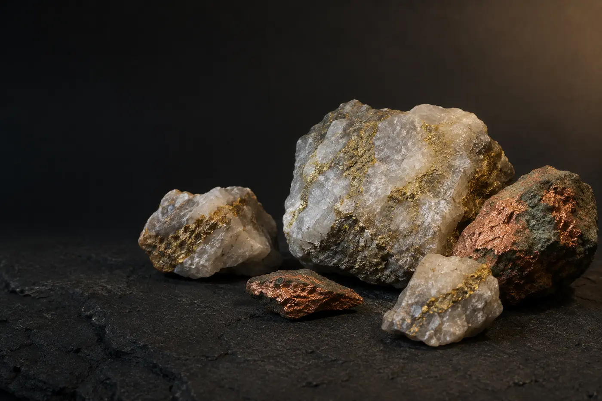

Exploration & opportunity assessment
Evaluating mineral opportunities and building the technical, commercial, and regulatory foundations required for responsible development.
Explore the focusFortenous Metals Tanzania Company Limited is building a disciplined platform for mineral exploration, project development, value addition, and strategic industrial partnerships in Tanzania.

Business activities are pursued only where the required licences, approvals, capacity, and project conditions are in place.
Our memorandum establishes a broad legal scope. Our near-term corporate story is deliberately focused on the mineral value chain and the partnerships needed to develop credible opportunities.
Evaluating mineral opportunities and building the technical, commercial, and regulatory foundations required for responsible development.
Explore the focusStructuring and advancing mining projects through suitable rights, licences, technical partners, capital, and local stakeholder engagement.
See our approachPursuing value addition, mineral processing, logistics, and routes to market where they strengthen project economics and local value creation.
View business areasFortenous Metals Tanzania Company Limited is a private company limited by shares under Tanzania’s Companies Act, Cap. 212. Its constitutional documents provide for mining, mineral exploration, processing, mineral trading, and related project activities.
The website separates authorised business objects from proven licences and current operations. That distinction protects the company’s credibility and helps serious partners complete due diligence efficiently.
Verified licence summaries will be published after management review. Public copies will be redacted where needed, while complete due-diligence documents can be shared directly with qualified parties.
This is intentional. A company object in the memorandum is not the same as a regulator-issued licence or active project.
We welcome serious conversations with technical partners, project owners, financiers, suppliers, and strategic investors whose objectives fit the company’s direction.
Review the corporate profile, business focus, governance information, and published document summaries.
Tell us your area of interest so the company can share an appropriate profile, licence record, or project information pack.
Meet management, align expectations, and agree on the information and professional checks required for the opportunity.
Introduce your organisation, mandate, and area of interest. The team will respond with the most relevant next step.